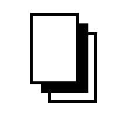
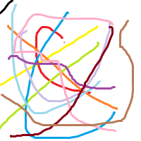
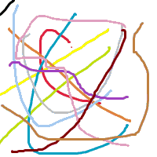
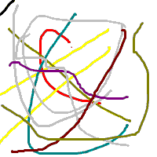
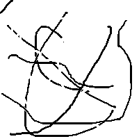

第161篇 日记
2026年02月07日 阴 Sat.
软件知识：不同位数的bmp图像
这是一个bmp格式的表情包，它的位数为24位（可以显示224=16,777,216种颜色），大小为118KB：
但如果将它转换为8位（可以显示256种颜色）bmp格式，大小会变为40.1KB，而且本来的肤色会变成这样：
这是因为8位bmp图像使用调色板来存储颜色信息，而调色板只能包含256种颜色。当原始图像中的颜色超过256种时，转换工具会选择最接近的颜色来替代，这就导致了颜色失真和图像质量下降，看上去很怪。
如果再把它转换为4位（只能显示16种颜色）bmp格式，大小会变为19.6KB：
这时图像质量就更差了，因为4位bmp图像的调色板只能包含16种颜色，远远不能满足原始图像的需求，所以颜色失真更加严重，看上去就像素化了。
最后我把它转换为1位bmp格式，大小会变为5.52KB：
这时图像质量就非常差了，因为1位bmp图像只能显示两种颜色（就是纯黑和纯白），完全无法表达原始图像的细节和颜色信息，看上去就像一个黑白的轮廓图了。
我还发现一个问题，就是一个logo图片，用png格式保存时，大小为1.57KB，但用bmp格式保存时，大小会变为5.52KB，而且位数为1位。这说明png格式在压缩图像数据方面比bmp格式更高效。
再来看看我用24位bmp格式保存的涂鸦，依次转换至8位、4位、1位：
下面的表格总结了不同位数下的bmp图像的各种颜色会变成什么另外的颜色：
| 24位bmp | 8位bmp | 4位bmp | 1位bmp |
|---|---|---|---|
| 红色(#f00710) | 红色(#ff0000) | 红色(#ff0000) | 黑色 |
| 橙色(#ffa500) | （有点像棕色） | 橄榄绿 | 黑色 |
| 黄色 | 黄色 | 黄色 | 白色 |
| 浅绿色 | 浅绿色 | 黄色 | 白色 |
| 浅蓝色 | 浅蓝色 | 灰色 | 白色 |
| 蓝色 | 蓝色 | 蓝色 | 黑色 |
| 紫色 | 紫色 | 更深的紫色 | 黑色 |
| 粉色 | 灰粉色 | 灰色 | 白色 |
| 棕色 | 棕色 | 橄榄绿 | 黑色 |
总之来说，不同位数的bmp图像在颜色表现上存在显著差异。24位bmp图像可以显示丰富的颜色，而位数越低，图像的颜色表现就越受限，最终导致图像质量下降。如果你需要保存图像为bmp格式，建议使用24位或更高位数以保持图像质量，如果你的图片对色彩要求不高，而且想要让图像文件更小，可以考虑使用8位的bmp格式。而4位的bmp图像则会进一步降低图像质量，因此不建议使用。1位就完全失去了图像的细节和颜色信息，只保留了黑白轮廓，而且纯黑白的图像用png格式保存会更高效。